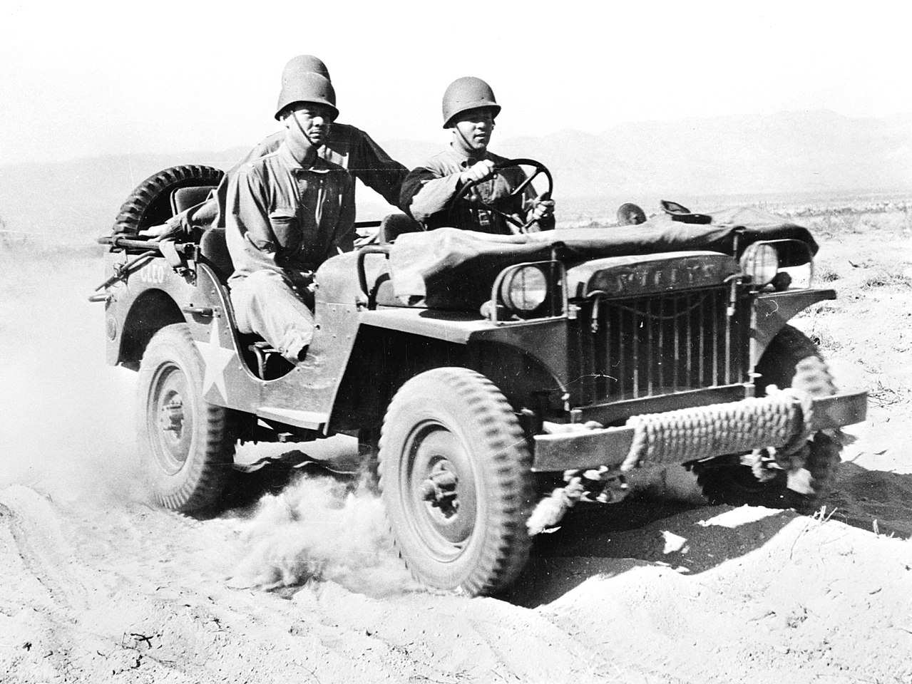

Il veicolo da trasporto Utility truck ¼ t 4x4 jeep fu il veicolo costruito nel maggior numero di esemplari nel corso della Seconda guerra mondiale. Fu usato dalle forze armate degli Stati Uniti su tutti i teatri di guerra e fu ceduto in quantità notevoli a tutti gli alleati, diventando quindi il principale veicolo di collegamento anche per gli eserciti britannico, sovietico e francese. Il nome "jeep" è dato dalla pronuncia dell'acronimo GP che sta per General Purpose (usi generali). Successivamente alla Seconda guerra mondiale il termine jeep indicò genericamente qualsiasi veicolo militare leggero non blindato con un aspetto simile alla jeep originale.
Per maggiori informzaioni premere qui.Ecco un immagine
Qui di seguito vi riportiamo aluci dati che mettono a confronto la jeep statunitense con altri celebri mezzi della guerra.
| CARATTERISTICHE | Kubelwagen | Fiat 508 | Moto Guzzi 500 | BMW R75 | Jeep |
| Cilindrata (cm)
Potenza (CV) Velocità max (km/h) |
1113
25 80 |
1089
30 95 |
498
13,2 90 |
746
26 92 |
2200
60 118 |